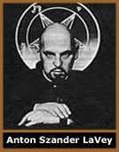
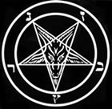

O termo Satanismo sugere
várias interpretações. Desde a Idade Média,
é usado para designar as crenças do período
pré-Cristão ou as religiões não cristãs,
como a Wicca. Há
ainda conotações contemporâneas associando
o satanismo a uma filosofia, adoração ao Diabo
etc.
Fundamentalmente, o Satanismo é um estilo
de vida de aplicação prática. Sua essência
baseia-se na idéia de que cada ser humano, em sua individualidade,
é uma divindade; capaz de alcançar altos níveis
de evolução, desde que não esteja preso a
nenhum dogma religioso que subtraia seus reais valores primitivos.
Portanto, cada indivíduo tem a liberdade espiritual e filosófica
de criar e desenvolver seus critérios, sendo ele seu próprio
sacerdote, salvador e deus. Neste caso, o Satanismo não
está associado à adoração ao Demônio
ou oposição ao Cristianismo.
Alguns tipos
de Satanismo
Luciferanismo
O Luciferanismo pode ser considerado uma derivação
da filosofia empregada no Satanismo. Seus seguidores não
cultuam Lúcifer (Lúcifer é visto como um
Anjo, e não como a personificação do mal
no cristianismo), mas o vêem como uma referência para
alcançar a Iluminação Espiritual. Sendo que
a origem de seu nome significa Portador da Luz.
Satanismo Gótico
Neste caso, o termo Gótico é sinônimo
de Medieval. Esta variação faz parte apenas das
lendas criadas na Idade Média pela Igreja Católica
para atemorizar os cristãos e servir de acusação
nos processos inquisitórios. O caso das Bruxas de Salém
em 1692, é um exemplo. Nesta variação lendária
do Satanismo, seus adeptos sacrificavam crianças e animais
em rituais de magia destrutiva.
Dabblers Satânicos
Está principalmente associada aos modismos
adolescentes. Seus adeptos ensaiam rituais esporádicos
de magia utilizando-se do sacrifício de pequenos animais.
É essencialmente uma forma de anticristianismo, onde os
Dabblers (aficionados) adoram o demônio conhecido
no cristianismo e se camuflam sob uma condição que
julgam satânica. Igualmente chamado de Devil Worshippers
(Adoradores do Demônio), também está associado
a delinqüentes que alegam cometer os crimes motivados por
Satã.
Satanismo Religioso
É a forma mais difundida de Satanismo. Possui
dogmas e a bíblia satânica. Também abriga
aspectos místicos e cerimoniais, como batizado e casamento,
que o caracterizam como uma religião. Porém, não
há uma divindade cultuada nem conceitos sobre céu
e inferno, bem e mal ou deus e diabo. A Church of Satan
e o Temple of Set são exemplos do satanismo religioso.
Anton LaVey e
a Igreja de Satã
Anton
Szandor LaVey nasceu na cidade de Chicago, em 11 de abril de 1930.
Esta é uma das poucas informações coerentes
sobre sua vida. De resto, há um grande conflito em sua
biografia. LaVey teria recebido ensinamentos ocultistas de sua
avó cigana. Ainda teria viajado para a Alemanha ao lado
de um tio, e trabalhado em circos, cabarés e até
mesmo na Polícia de San Francisco. LaVey também
teria vivido romances com as atrizes Marilyn Monroe e Jayne Mansfield.
Em 30 de abril de 1966, foi fundada a Igreja
de Satã (Church of Satan) por Anton LaVey. Apesar
de já haver grupos como o Hell Fire Club e o Abbey
of Thelema, que cultivavam uma linha semelhante, a Igreja
de Satã foi a primeira organização reconhecida
como religião dedicada às filosofias satânicas,
e considerada a precursora do satanismo moderno. É provável
que o nome Church of Satan tenha sido adotado como uma forma de
causar um impacto polêmico e chamar a atenção
da imprensa. As "Missas Satânicas", que eram paródias
das missas cristãs, possivelmente foram criadas com o mesmo
objetivo. Portanto, seriam apenas recursos publicitários
empregados por LaVey.
Assim, a Igreja de Satã recebeu uma atenção
muito grande por parte da sociedade e da imprensa americana, logo
atingindo uma notoriedade mundial. LaVey passou a ser considerado
o Papa Negro e sua esposa Diane Hegarty, foi nomeada
Suma Sacerdotisa.
Em 1º de fevereiro de 1967, ocorreu em San
Francisco a cerimônia de casamento entre John Raymond, jornalista
político, com Judith Case, filha de um conhecido advogado
de Nova York. Apesar de não ser o primeiro casamento satânico
realizado por Anton LaVey, a fama de John e Judith serem de famílias
abastadas, despertou grande interesse e a cerimônia tornou-se
um evento amplamente coberto pela imprensa.
Em maio do mesmo ano, LaVey conduziu o batismo
de sua filha de três anos, Zeena. Foi o primeiro
batismo satânico da história. Zeena vestia um manto
vermelho e usava um medalhão com a imagem de Baphomet,
enquanto seu pai recitava uma invocação que futuramente
foi incluída no livro Satanic Rituals.
Em 1969, a Igreja já contava com 10 mil
adeptos em todo o mundo. Anton LaVey publicou The Satanic Bible,
que se tornaria a principal referência do Satanismo. Ainda
seguiram-se The Compleat Witch em 1970 (posteriormente revisto
e editado como The Satanic Witch) e em 1972, The Satanic Rituals.
A Igreja desenvolvia sua estrutura e hierarquia
nas décadas de 70 e 80. Em 1984, Anton LaVey separa-se
de Diane e sua filha Zeena ocupa a posição de Suma
Sacerdotisa. Nesse período, as Missas Negras e outras cerimônias
deixam de ser realizadas devido a intolerância de grupos
cristãos. Anton LaVey passa a administrá-la apenas
através do Boletim Oficial The Cloven Hoof. Em
1988, este informativo foi extinto e algumas publicações
independentes tornaram-se a forma de interagir os adeptos em diversas
partes do mundo. Ainda houve um grupo que se desligou da Igreja
e formou o Temple of Set (relativo à divindade
egípcia Set). Anton LaVey faleceu em outubro de
1997 devido a um edema pulmonar. Atualmente, a Igreja é
presidida por Peter Gilmore.
Baphomet, Pentagrama
e a Cruz Invertida
Em
meio às diversas polêmicas que compõem o tema
do satanismo, alguns pontos não ficam totalmente esclarecidos.
Por exemplo, a representação de uma cabra com corpo
humano encontrada nos cultos do satanismo religioso é denominada
Baphomet, que já era conhecida desde os tempos
pré-cristãos. Portanto, não possui nenhuma
relação com o demônio conhecido no cristianismo.
Para os satanistas, Baphomet é uma energia da natureza
que os motiva a conseguir seus objetivos. Neste caso, a cabra
com corpo humano e asas simboliza força, fertilidade e
liberdade, características muito valorizadas pelos povos
pagãos.
O pentagrama
é um símbolo encontrado originalmente nas culturas
pré-cristãs com diversos significados. No caso do
satanismo religioso, é utilizado com duas pontas voltadas
para cima, simbolizando a face de Baphomet.
A origem da cruz invertida nos remete a São
Pedro, que não se julgava digno de morrer como Jesus
e pediu para ser crucificado de cabeça para baixo. Este
símbolo é encontrado na Basílica do Vaticano,
no trono ocupado pelo Papa, etc. Porém, a Cruz invertida
também foi adotada por grupos que se intitulam satanistas
ou anticristãos.
Por
Spectrum